生日這天
我們把里斯本走成一條長長的祝福
從 Príncipe Real 走到 Alfama
從 Flabelus 的橘紫格子牆走到 Louis Vuitton 的單字塔
一根蠟燭、兩支 gelato、一頓米其林午餐、一隻 Neverfull
Beatriz、Flaminia、Lucrécia —— 一個品牌名字背後的三個名字
起床第一件事是禮物。阿米生日,我們從 Av. Duque de Loulé 散步到 Príncipe Real,那條街因為週六變得特別放鬆,陽光斜斜地打在橘紅與淡紫的格子牆上 —— Flabelus,這家西班牙手工鞋牌的里斯本店,從很遠就能認出來。
店名來自三個女生:Flaminia、Beatriz、Lucrécia。她們在馬德里,2020 年,把彼此的名字拆開,組合成一個品牌。每一款鞋,都用文學裡的女性角色命名 —— Colette、Ada、Mara —— 像在替女人們建一座小型圖書館,但用鞋子的形式。
這就是「友情」最理想的形態吧:三個人,願意把自己名字的一部分,讓給彼此。我覺得這份禮物送對了。阿米挑了兩雙。一雙日常,一雙特別場合。等等去 Tapisco 吃午餐,當然不能立刻穿 —— 因為這兩雙鞋現在還有另一個身份:退稅商品,得保持原樣到巴黎海關。
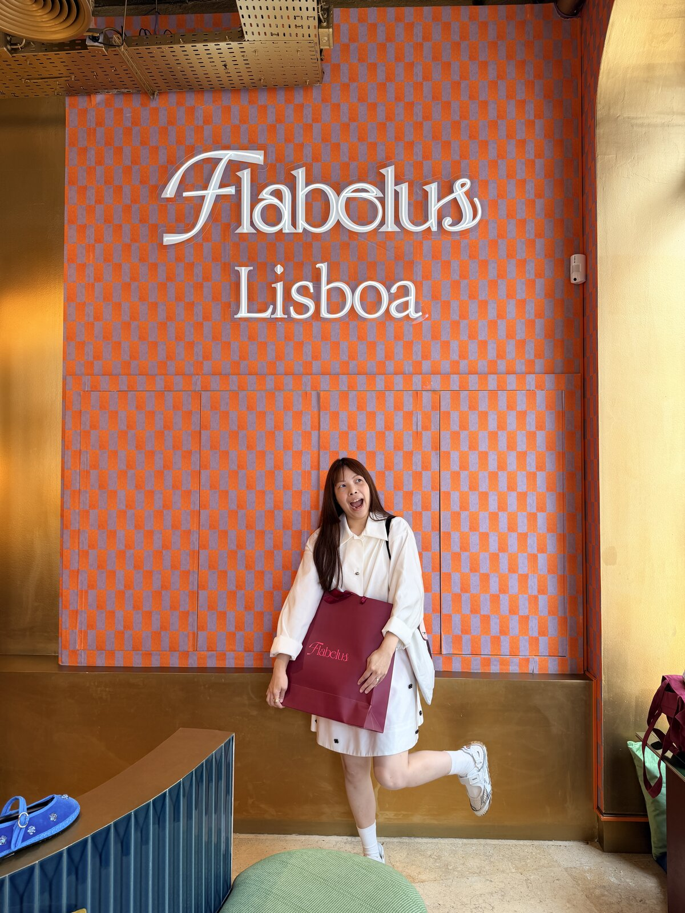
FLABELUS LISBOA · 10:42橘紅與淡紫格紋牆,霓虹店招,酒紅色提袋裡是兩雙剛挑好的鞋。抬腳、張嘴大笑 —— 今天她是這條街最閃的人。
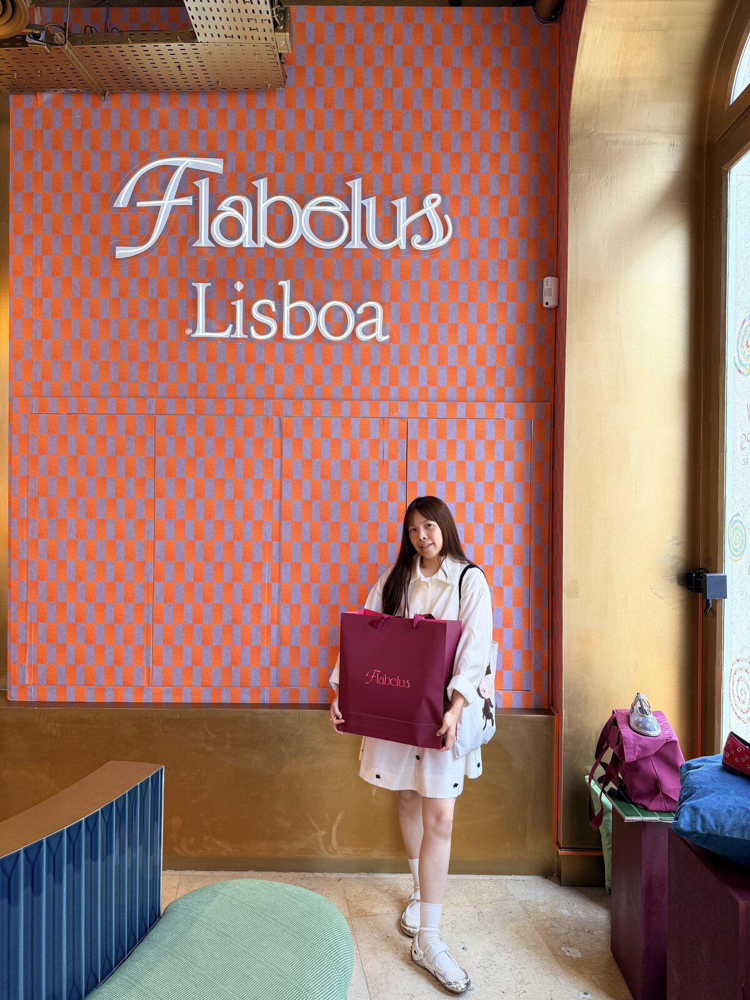
第二張角度,稍微沉澱了一點。「My definition of friendship」 —— 三個女生的名字,湊成一個品牌的名字。
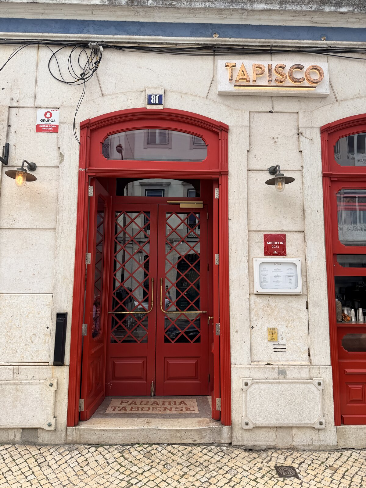
出店往午餐地點走 —— Rua Dom Pedro V 81 號,紅色的門推開就是下一個故事。
Chef Henrique Sá Pessoa 的米其林午餐 · Tapas + Petiscos = Tapisco
Tapisco 在 Rua D. Pedro V 81 號 —— 這個地方一百多年前是一家叫 Padaria Taboense 的麵包店,門口的馬賽克地磚被刻意保留下來,踩過的瞬間像踩在一塊還活著的歷史上。2017 年 2 月,二星米其林主廚 Henrique Sá Pessoa(他的另一家 Alma 在 Chiado 拿了兩星)把這裡改造成西班牙塔帕斯與葡萄牙小食的雜交實驗場。
一進門先抬頭 —— 黑蹄火腿一排吊在天花板上。我數了一遍:整整十三隻。每一隻都是 Pata Negra 黑蹄,Ibérico de Bellota,橡實飼養 36 個月以上才算數。生日這天看到十三隻火腿,我有種異樣的浪漫感 —— 後面會講到「13」這個數字今天怎麼變成命運線。
牆上有 illustrator Ana Gil 畫的壁畫:Vermouth 瓶、paella 鍋、僧侶、葡萄牙摺扇、jamón —— 整面牆把這家店的 DNA 畫出來了。服務生 Beatriz Santos 走過來介紹菜單 —— 等等,Beatriz?早上 Flabelus 的創辦人之一也叫 Beatriz。一個普通名字,在一天裡出現兩次,世界突然變窄了。
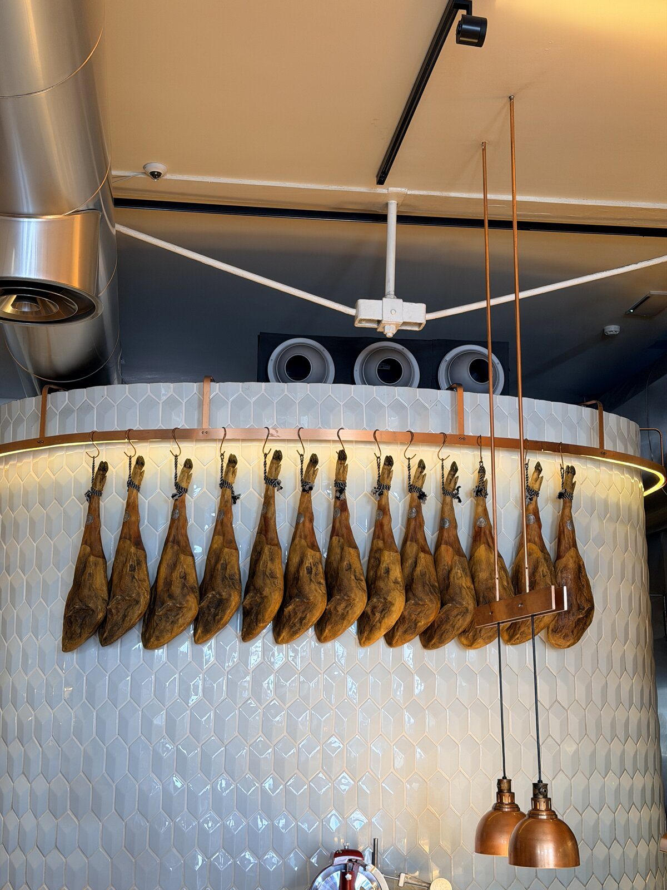
PATA NEGRA · ×13整整十三隻 Pata Negra 黑蹄火腿,從蜂巢狀白磁磚牆吊下來。一隻一隻數過。
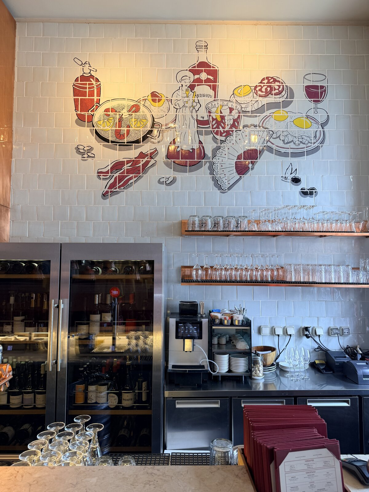
ANA GIL · MURAL白磁磚上的壁畫 —— vermouth、paella、僧侶、葡萄牙摺扇、jamón、葡萄酒杯。這家店的 DNA 全畫進去了。
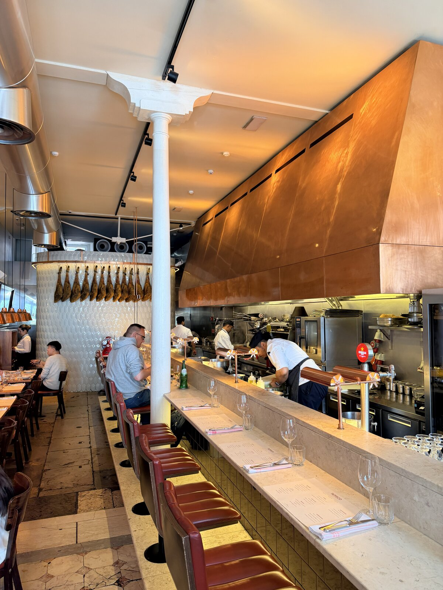
TAPISCO · 開放廚房銅色抽風罩、白柱、紅皮吧台椅,廚師正在出菜。火腿牆在最底端發光。
我們點了四道。一杯 Pedras 氣泡水。前菜是 Mexilhão à Espanhola(西班牙風淡菜)—— 阿米可以吃貝類但不能吃甲殼類,這道菜剛好繞過所有禁忌,在番茄與大蒜的湯汁裡發著光。主菜兩道一起上來:Bacalhau com Migas 馬介休配番茄麵包屑、檸檬慕斯、海蘆筍、橄欖碎;以及 Arroz de Pato —— 鴨肉飯,用 Staub 鑄鐵鍋盛,上面有黑豬 linguiça 香腸圈、aioli 點點。
阿米嚐了一口鴨鴨飯,抬頭跟我說:「跟昨天的鴨鴨飯味道不同。」
—— 對,昨天我們在 O Frade 也點了 Arroz de Pato。一隻鴨,兩座城市的詮釋,兩天裡被吃了兩次,而她記得。這就是阿米。
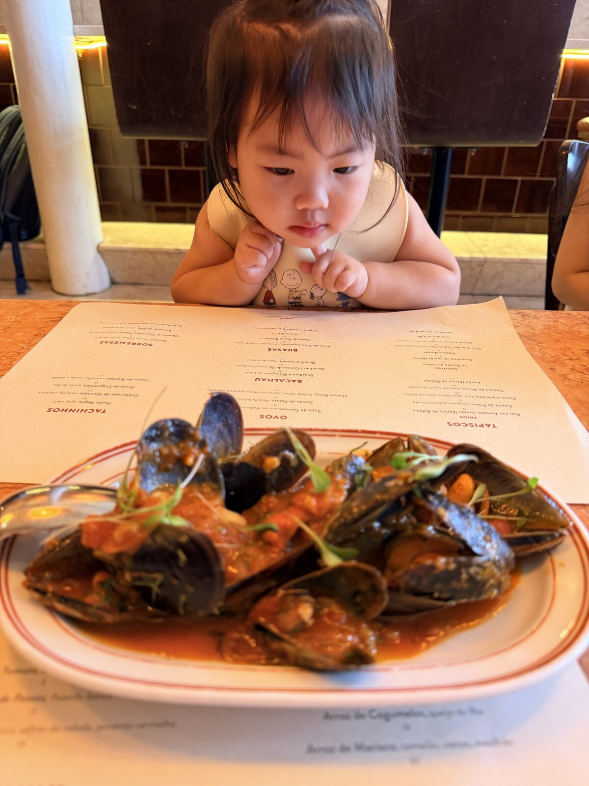
MIMI · TAPISCO米米托腮看著淡菜,Snoopy 圍兜 + 倒著的菜單 + 番茄湯汁裡的黑色貝殼。她在思考要不要碰那一灘紅色。
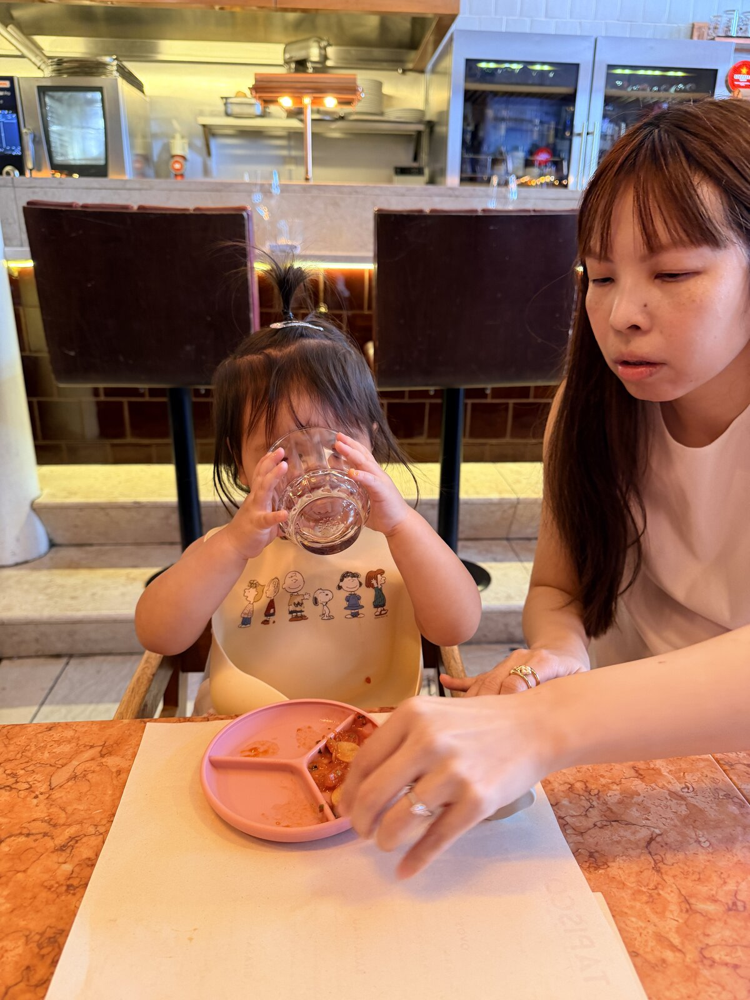
下一秒選擇了水。雙手捧著玻璃杯,粉色矽膠分隔盤在桌上等著。
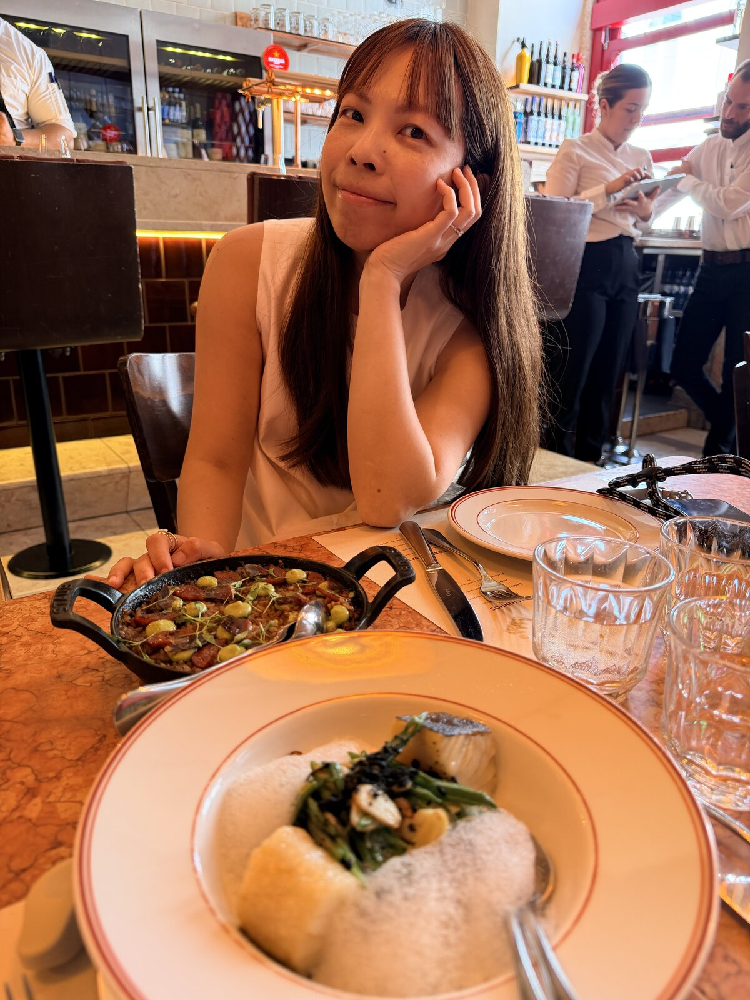
AMI · DUAS PRINCIPAIS · HERO阿米托腮微笑。前景是馬介休配檸檬慕斯,後景是 Staub 鑄鐵鍋的鴨鴨飯。雙主菜同時上桌,生日午餐的高光時刻。
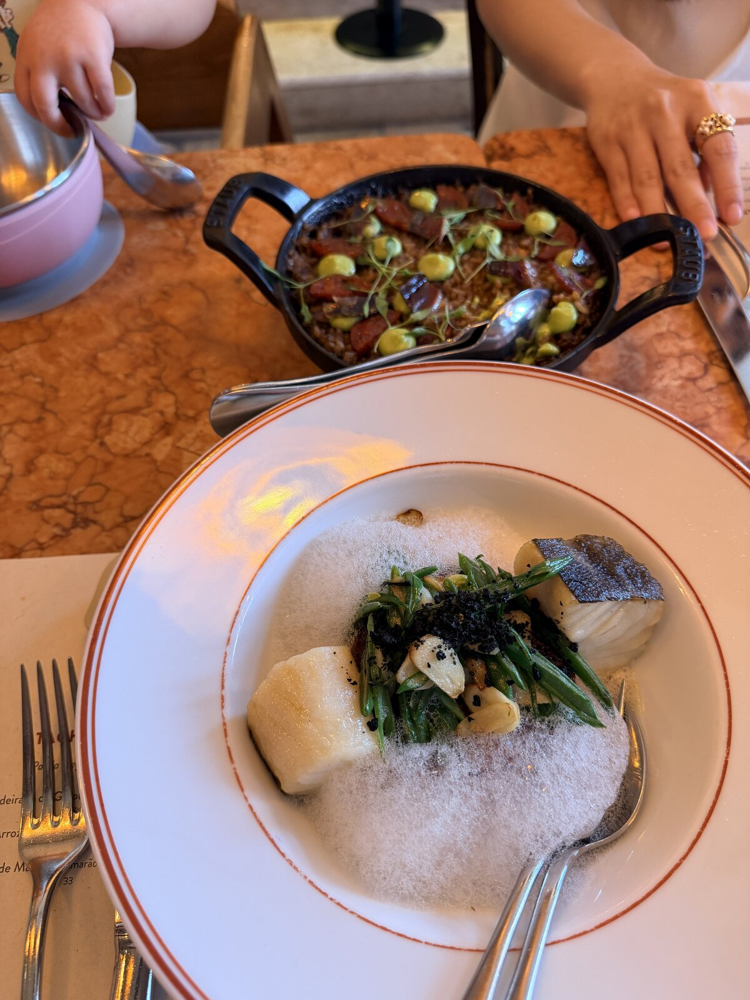
換個視角俯拍:馬介休躺在白色檸檬慕斯雲上,鴨鴨飯在 Staub 鍋裡擠著香腸與蠶豆。左上角是米米的粉色矽膠盤,她也分了一口。
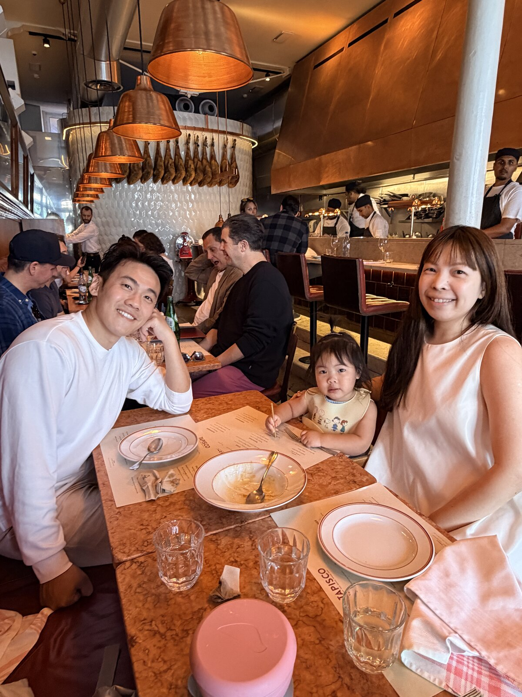
FAMILY · ×13 JAMÓN · HERO十三隻火腿在背後當證人。米米的 Snoopy 圍兜、阿米的米色洋裝、我的白 tee —— 今天我們是白色家庭。銅色抽風罩在頂上像加冕。
然後甜點上來了。
表面上是 Arroz Doce —— 米布丁加焦糖。但這份米布丁中央插了一根蠟燭,火焰在燃燒。Beatriz 知道。不知道是 Flabelus 還是 Tapisco 哪一邊洩漏了「今天是阿米生日」,總之這根蠟燭出現在桌上。米米看到火,先愣了一下,接著開始拍手。阿米也拍手,笑到眼睛瞇起來。
TAPISCO · 13:08 · O MOMENTO米布丁 + 一根蠟燭 + 米米拍手 + 阿米拍手大笑 + 廚房裡的廚師在揉麵糰。這就是這一天的縮影。
「跟昨天的鴨鴨飯味道不同。」
— Ami · Tapisco · 13.V.2026
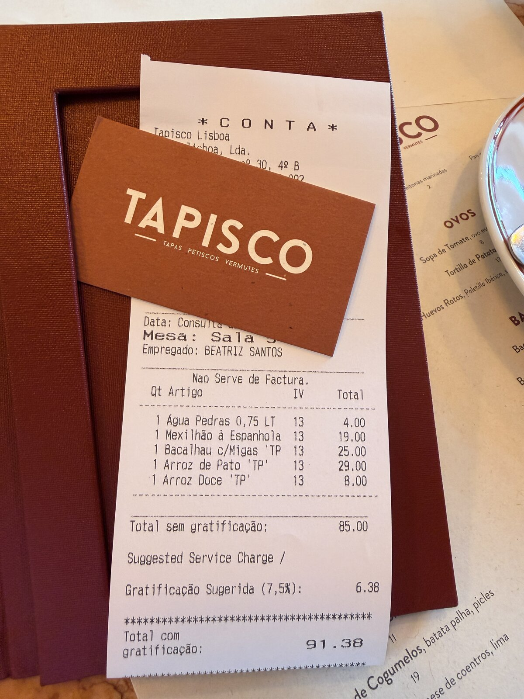
收據上面印著 Empregado: Beatriz Santos —— 名字第二次出現。€85 + 小費 €6.38 = €91.38。
梧桐、calçada、週六的市集
從 Tapisco 慢慢往下坡走,自由大道在這個時段是溫的。梧桐(這裡還不是藍花楹的地盤,藍花楹要再往下走)。腳下是 calçada portuguesa —— 那種一塊塊小白石手工拼出來的鋪路工藝,踩起來軟硬不一,推嬰兒車有時要繞著走。週六下午有市集擺在大道中段,皮件、香皂、二手書 —— 我們沒買,只是看著。
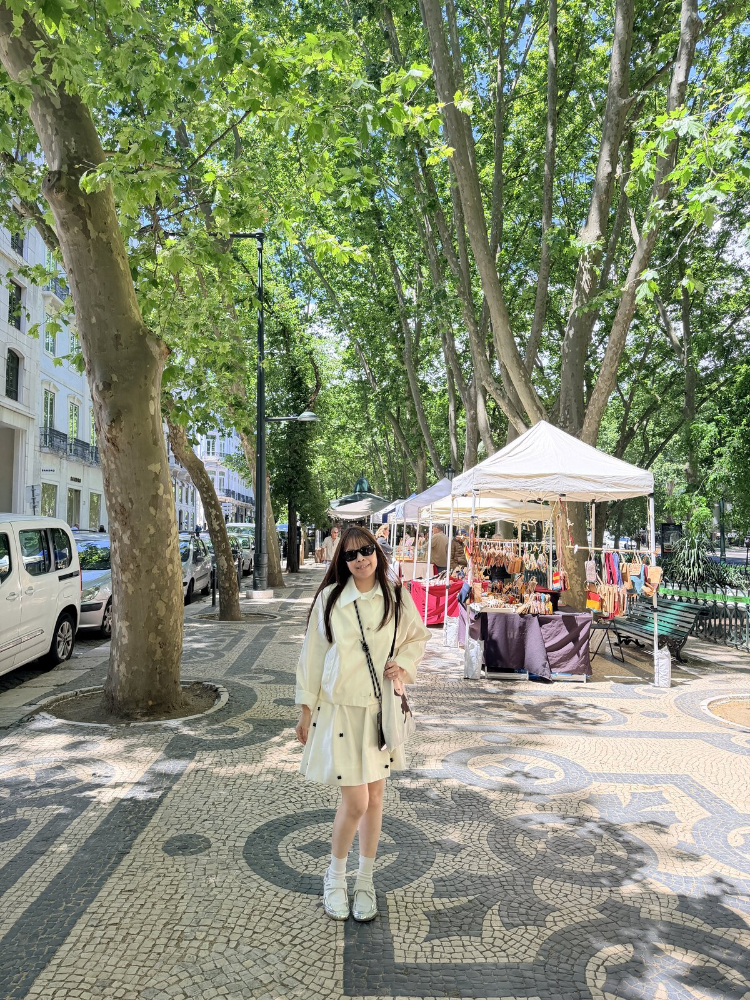
AVENIDA DA LIBERDADE阿米米黃色洋裝套裝 + Loewe 黑色貓貓包斜背 + 太陽眼鏡 + 梧桐樹蔭 + 週六市集的白色帳棚。光線像一首歌的前奏。
方尖碑底座的 1668/2/13 ❉ Ami 的 2026/5/13
廣場中央是一根三十米高的白色方尖碑 —— 1886 年立的,為了紀念 1640 年葡萄牙從西班牙手裡「復國」這件事。方尖碑底座刻著兩個日期:1668 年 2 月 13 日(里斯本和約簽訂)、1665 年 6 月 14 日(Vila Viçosa 戰役勝利)。
等一下 —— 1668 年 2 月 13 日。今天是 5 月 13 日。阿米的生日。
葡萄牙人三百多年前在 2 月 13 日簽下讓自己自由的那紙條約;阿米三十多年前在 5 月 13 日來到這個世界。一個國家的自由日,跟一個人的誕生日,共用同一個數字。我不太相信玄學,但里斯本似乎在這天認真地排了一場儀式給我們看。
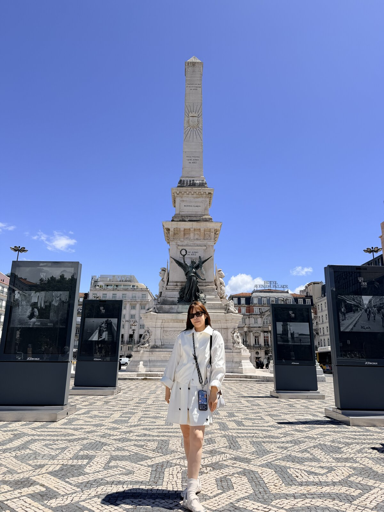
OBELISCO · 30 METROS · HERO阿米在 30 米高的白色方尖碑前面。兩側是 JCDecaux 的「Lisboa '87/'88」黑白攝影展板。底座上的「1668/2/13」剛好對上阿米的「2026/5/13」。
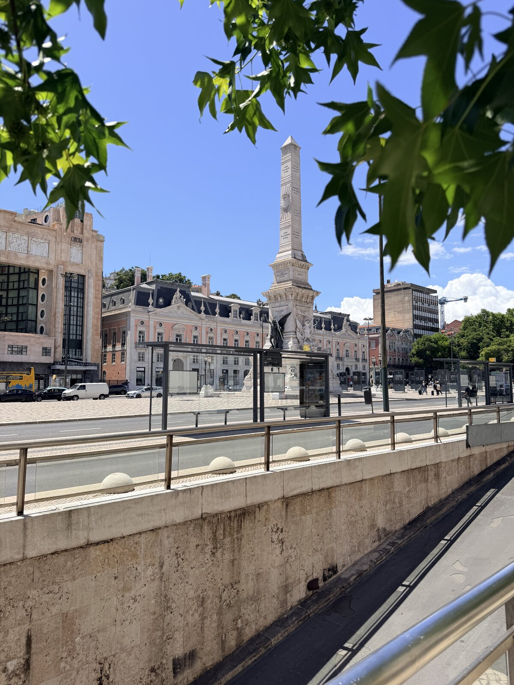
廣場另一側 —— 1777 年的粉色洛可可 Palácio Foz(現在是觀光局),旁邊是 1931 年的 Art Deco 老戲院 Teatro Éden(現在改成 Eden Aparthotel)。
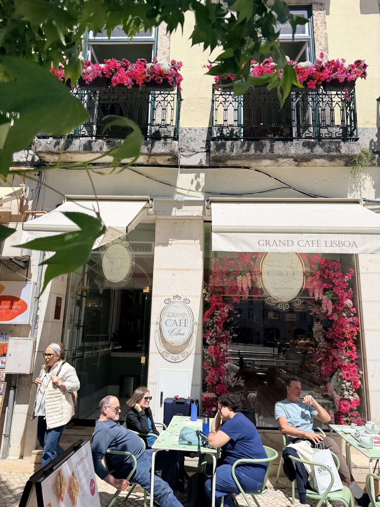
GRAND CAFÉ LISBOA2025 年 11 月剛開幕的 Bridgerton 美學咖啡店 —— 粉紅乾燥花拱門、孔雀裝飾、手繪天花板。今天經過沒進去,留著下次。
Day 9 設下的伏筆 · Day 10 兌現
Rossio 火車站是 1886 年蓋的,新曼努埃爾風格(Neo-Manueline),門口兩個馬蹄形拱門像兩隻睜大的眼睛。隔壁是 D. Pedro IV 廣場 —— 廣場中央的圓柱 27.5 米高,1870 年立的,柱頂站著 D. Pedro IV,也就是巴西的第一任皇帝 Pedro I。一個人,兩個國家的史書都寫他。
柱腳下兩座法國青銅噴泉,1889 年從巴黎運來,水池裡有美人魚雕塑。廣場地面是著名的波浪紋 calçada —— 你可能在巴西里約的 Copacabana 海灘看過同樣的圖案。對,那是抄這裡的。
但今天真正的主角是 ——藍花楹。Day 9 我們在貝倫一直等不到滿開的 jacarandá,只看到零星紫色。今天在 Rossio,終於看到一棵正盛的藍花楹,從 D. Pedro IV 國王銅像的腳下抬頭看上去 —— 整片紫色掛在天上。
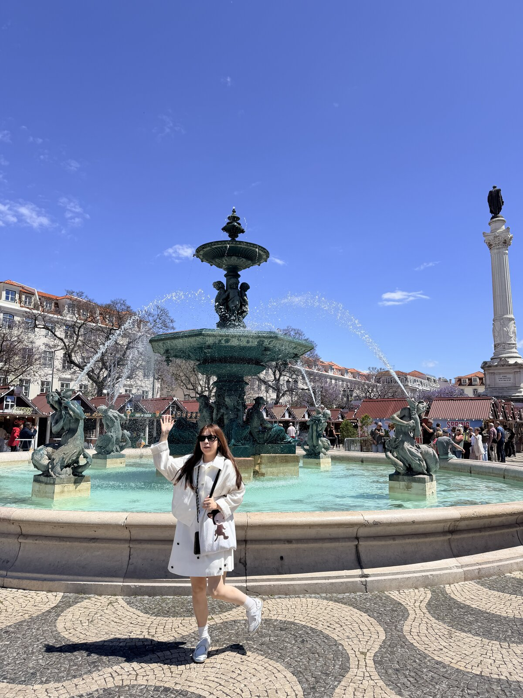
FONTE FRANCESA · 1889 · HERO阿米在法國青銅噴泉前舉手揮揮。背後是 D. Pedro IV 圓柱 + 廣場兩側的市集小屋紅頂 + 噴泉的水柱與海豚騎士銅像。腳下波浪紋 calçada —— Copacabana 海灘的原型。
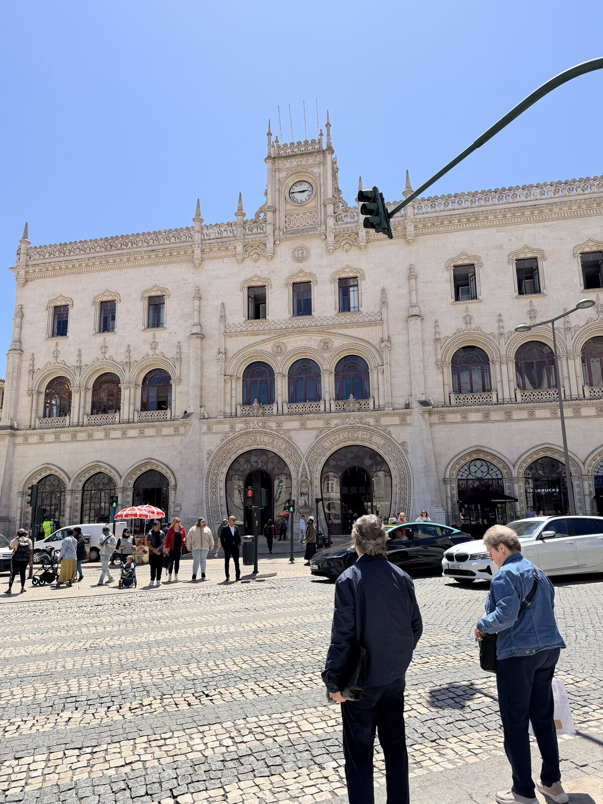
ESTAÇÃO DO ROSSIO · 1886新曼努埃爾風格火車站,馬蹄形雙拱門,鐘塔。Starbucks 的招牌就在門口右邊。
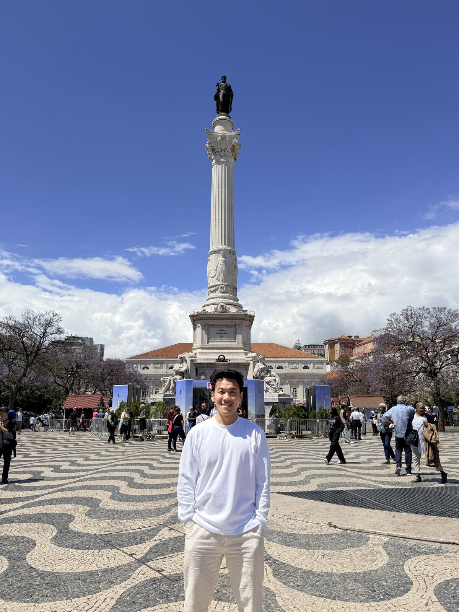
D. Pedro IV 圓柱 27.5 米高,1870 年立,柱頂站著巴西的第一任皇帝。腳下的波浪紋 calçada 像在跳舞。
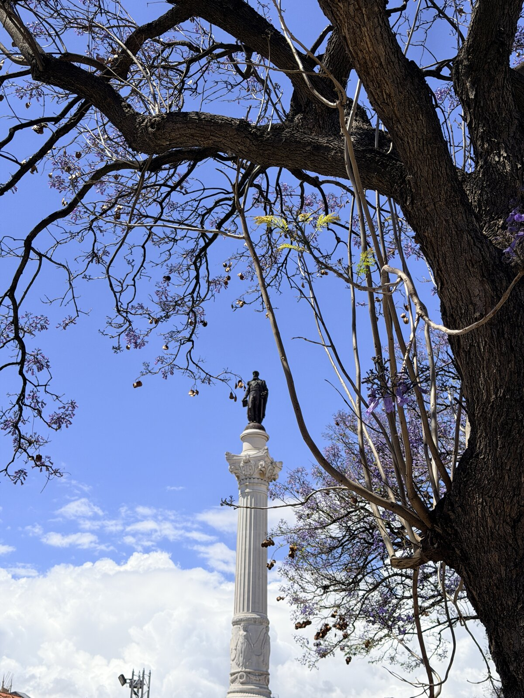
JACARANDÁ · SILHUETA DO REI從藍花楹枝幹底下仰拍 —— D. Pedro IV 銅像剪影在紫色花瓣與去年的褐色種子莢之間。Day 9 沒看到的版本。
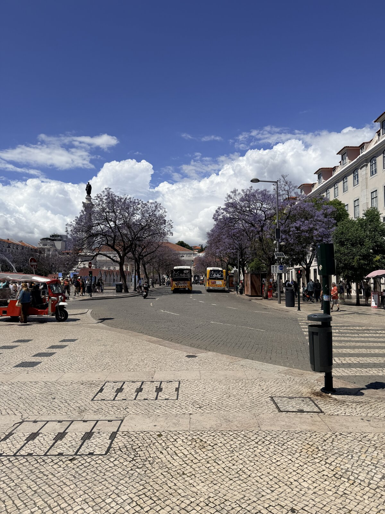
廣場全景:左前 tuk-tuk、中央兩台黃色 carris 巴士、右前的藍花楹樹開到正盛、最後方是 D. Pedro IV 銅像。里斯本最像里斯本的瞬間。
Pombaline 黃色建築 · MAAT Design · 街頭擺攤
Rua Augusta 是里斯本最有名的行人購物街 —— 兩排 Pombaline 黃色建築,1755 年大地震之後重建出來的整齊。MAAT 設計博物館、Salsa 牛仔褲、街頭表演,還有地上鋪滿的足球隊紀念衣。我們從 Rua da Vitória 路口走進去,阿米一邊指著街尾的拱門:「到了到了!」
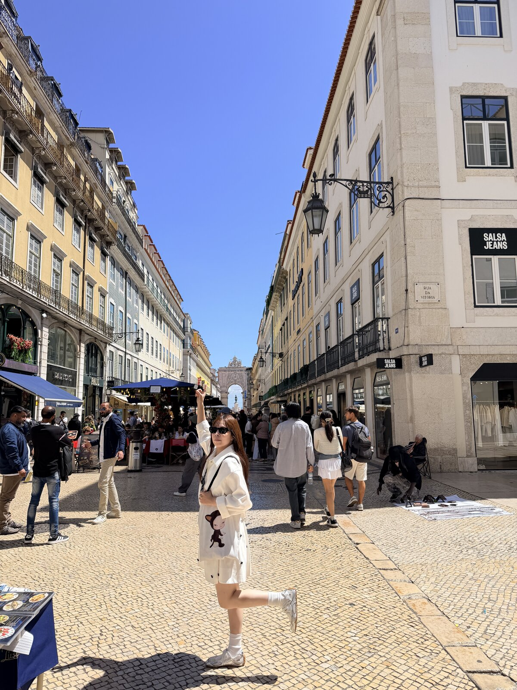
RUA DA VITÓRIA · POINTING阿米抬手指著街尾的拱門。右邊是 Salsa Jeans 旗艦,左邊是 PAÚL 烘焙坊的露天座位,中央遠處的拱門像一個句號。
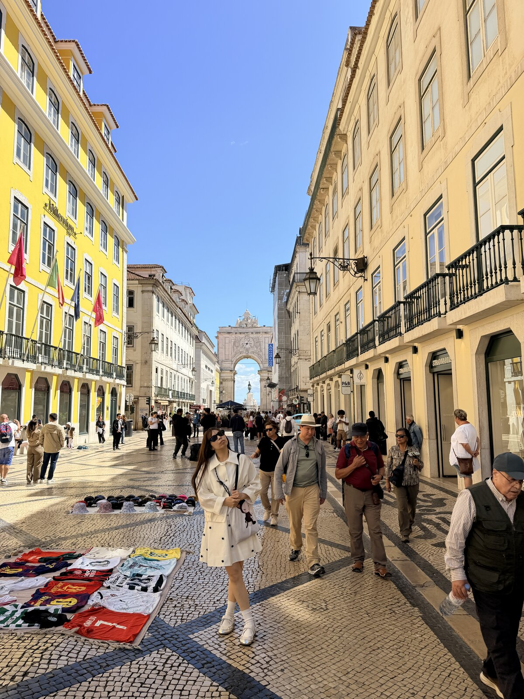
繼續往前 —— 左邊是 Pombaline 黃色大樓 + 葡萄牙國旗,右邊是街頭擺攤的足球衣與紀念帽。光線剛剛好,拱門在街道末端越來越大。
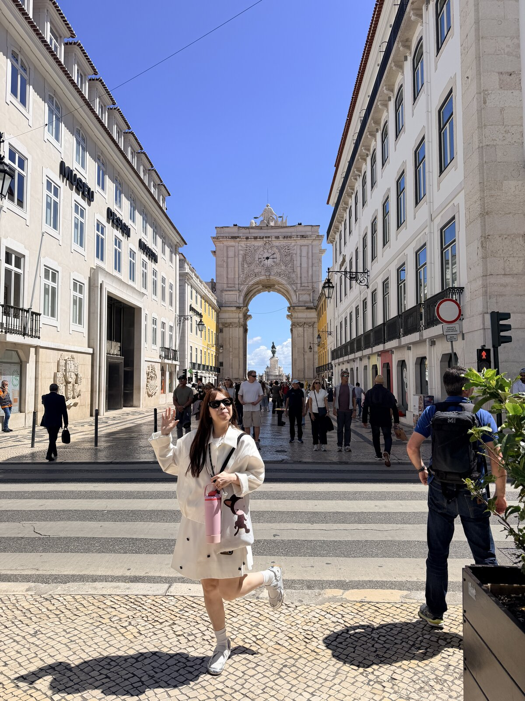
ARCO · ABRINDO PERNAS · HERO阿米在 MAAT Design Museum 招牌前抬腳大笑揮手 —— 整個拱門連同遠方 D. José I 騎馬銅像被框在後面。今天的第二次「抬腳大笑」(第一次在 Flabelus)。
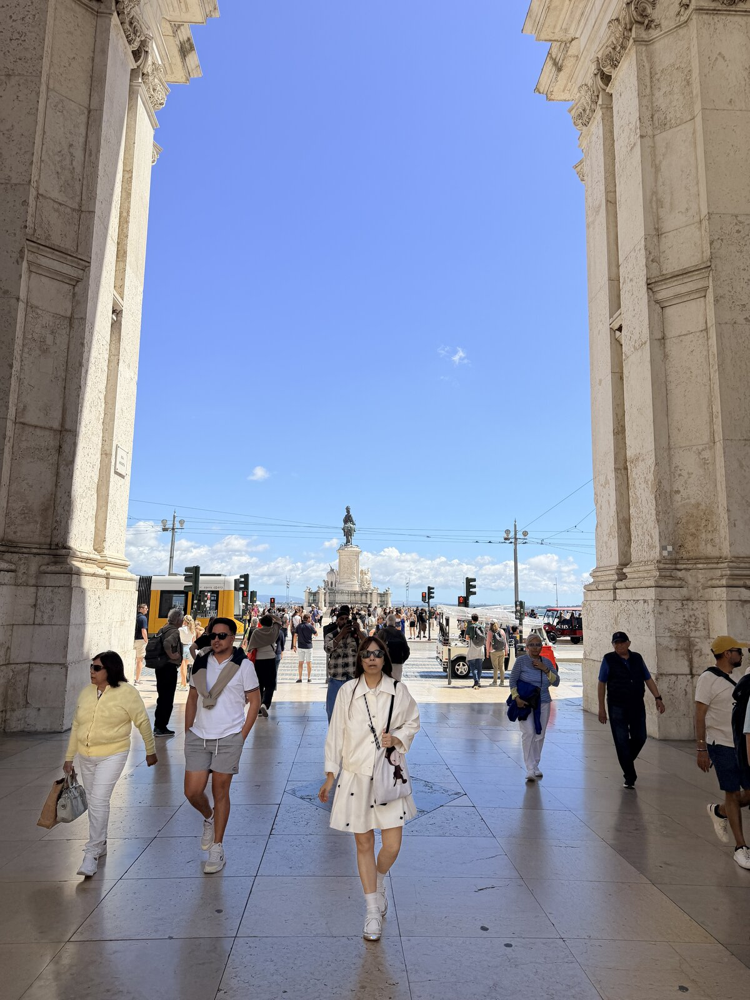
穿過拱門 —— 阿米從拱底走出來,後面廣場上的騎馬國王雕像剛好被框在拱門洞裡。建築當畫框,人物當主角。
VIRTVTIBVS MAIORVM · 以先人之德,為萬世表率
拱門 1875 年完工,頂上刻著拉丁文:"VIRTVTIBVS MAIORVM / VT SIT OMNIBVS DOCVMENTO" —— 「以先人之德,為萬世表率」。穿過拱門就是 Praça do Comércio,廣場中央 D. José I 國王騎著馬的青銅像,1775 年立的,是里斯本市中心唯一的「騎馬國王」。
我抬頭剛好抓到一個瞬間:一架飛機從拱門正上方飛過。下面是十八世紀的拱頂雕刻,上面是 2026 年的航空條紋。電影感拉滿。明天我們也會搭飛機 —— 從這座城市離開,飛去巴黎。
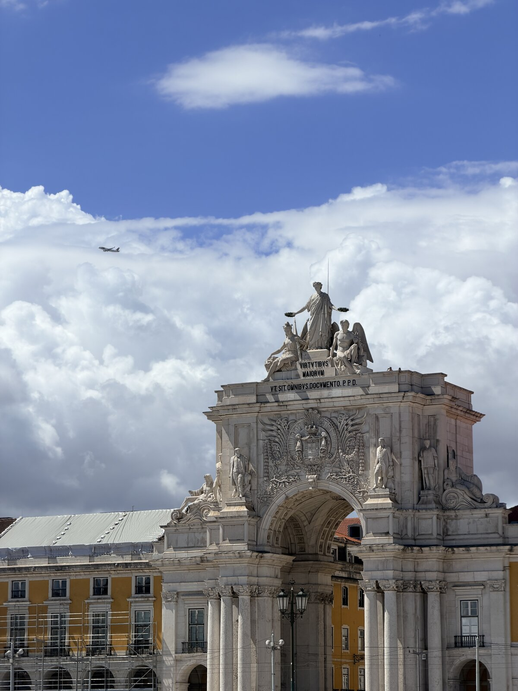
CINEMATIC FRAME · 15:00飛機從 Arco da Rua Augusta 正上方掠過。十八世紀的石頭雕刻,二十一世紀的金屬機翼。明天我們也會在天上 —— 飛去巴黎。
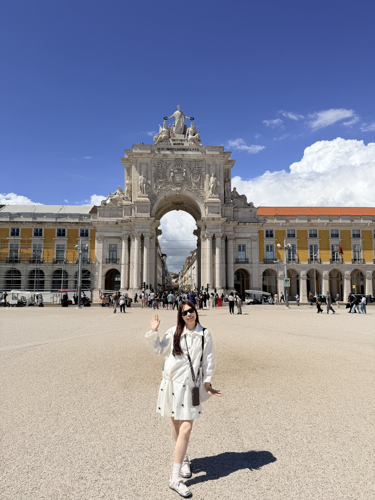
阿米揮手 + 拱門正面 —— 拉丁文「VIRTVTIBVS MAIORVM」可以從這個距離看清楚。
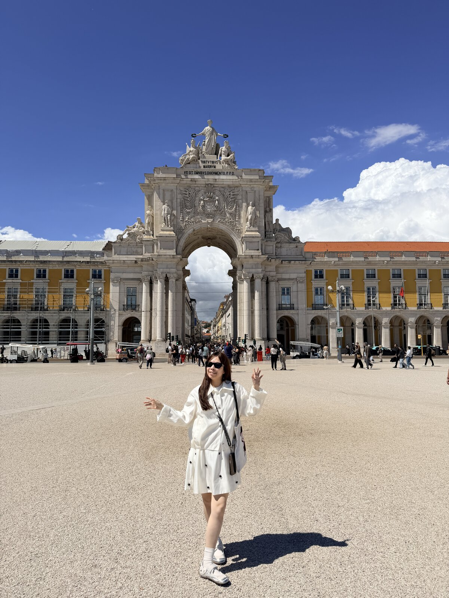
雙手張開的版本。背後一大片 Pombaline 黃,中央拱門頂上四個雕像 —— Virtude、Génio、Valor、Glória(美德、天才、勇氣、榮光)。
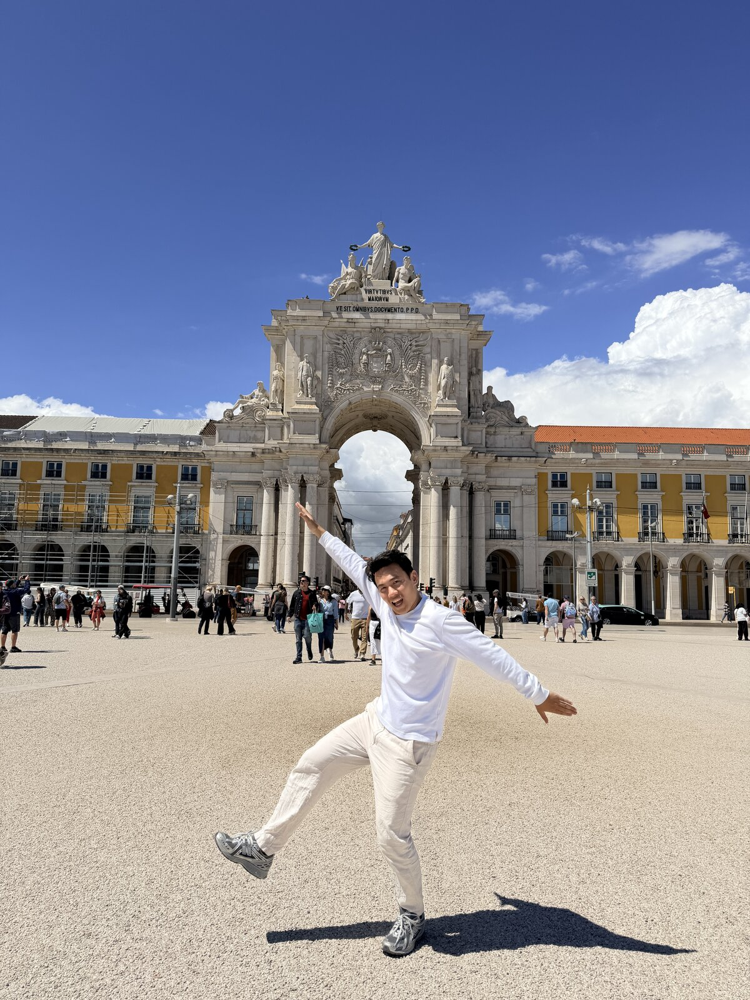
QUERIDO · A MINHA VERSÃO阿米雙手張開,我抬腿大跳。這對 couple shot 是我們在拱門前的標準操作。
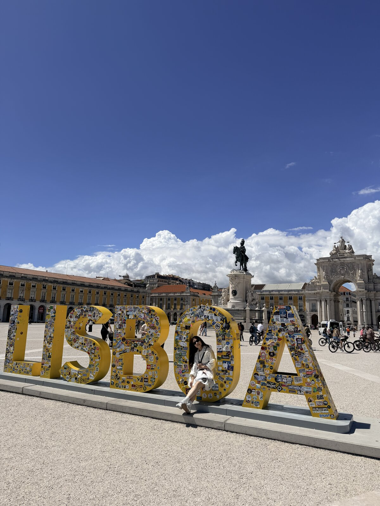
LISBOA SIGN · STICKER EDITION · HERO阿米坐在被全世界旅人貼紙覆蓋的 LISBOA 字牌的 B 上面。背後是 D. José I 國王騎馬青銅像 + Pombaline 黃 + 右側半個 Arco da Rua Augusta。三個地標一張照片到位。
每一張貼紙都是一個人來過的證據。有人寫了「FREE TIBET」、有人留了某家義大利餐廳的廣告、有人放了一張看不懂的卡通圖。字牌本來是黃的,被貼到看不到原本顏色。阿米是今天加在這座字牌上的「無形貼紙」 —— 我們的版本不留下任何東西,只帶走一張照片。
Sé 大教堂 · 1147 年最老的那一座
從 Praça do Comércio 往東北走,經過 Sé 大教堂 —— 1147 年蓋的,里斯本最老的教堂。雙塔羅馬式-哥德式混搭。我們沒進去,只是從公車站旁邊看著它。Sé 站在 Alfama 的山腳下,看起來像一塊安靜的石頭。
然後往 Mouraria 走 —— 「摩爾人區」。1147 年里斯本被重新征服之後,穆斯林被遷到這個區域,所以叫 Mouraria。後來成了 Fado 的發源地,現在是多元文化交會的老區 —— 中國雜貨店、印度餐廳、孟加拉小吃、葡萄牙阿嬤從窗台探頭。Largo de São Cristóvão 的舊路牌、Tram 28 的鐵軌,還埋在石板路裡。
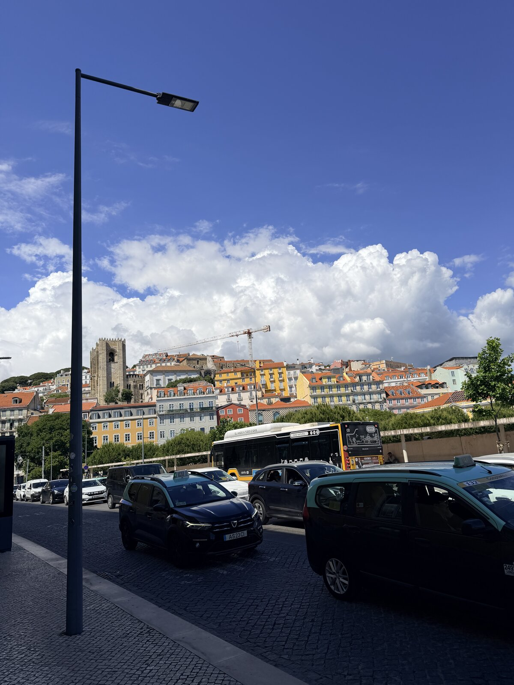
SÉ DE LISBOA · 1147從公車站旁邊看 Sé 大教堂,方塔在 Alfama 屋頂的最高處,周邊一片橘色紅頂,後面是 cumulus 雲。
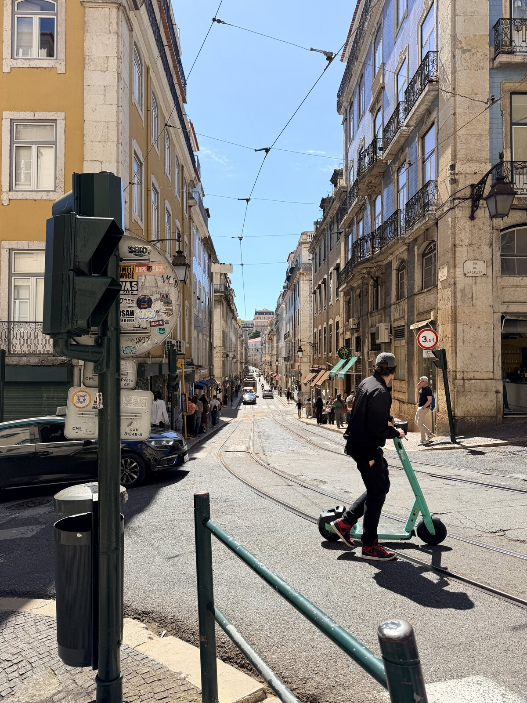
Mouraria 街角 —— Rua da Madalena 路牌、Tram 28 軌道、一個穿全黑騎滑板車的年輕人。上面纏著電車的鐵絲網。
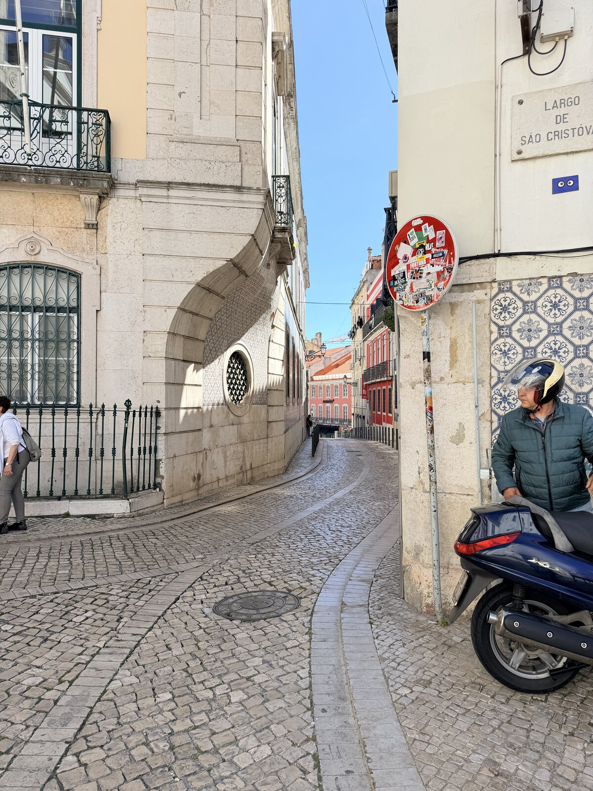
LARGO DE SÃO CRISTÓVÃO圓形貼紙路牌全是世界各地的貼紙,旁邊的牆是藍白 azulejo —— Mouraria 的標準街角。
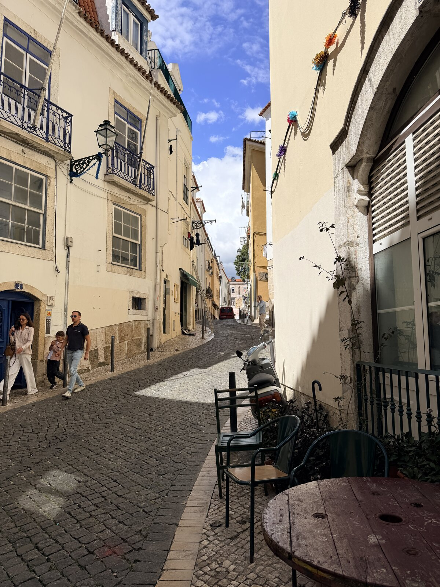
巷弄的另一頭 —— 一個爸爸抱著小孩走過,陽台串著彩色裝飾,空地上的露天酒桌等著傍晚。
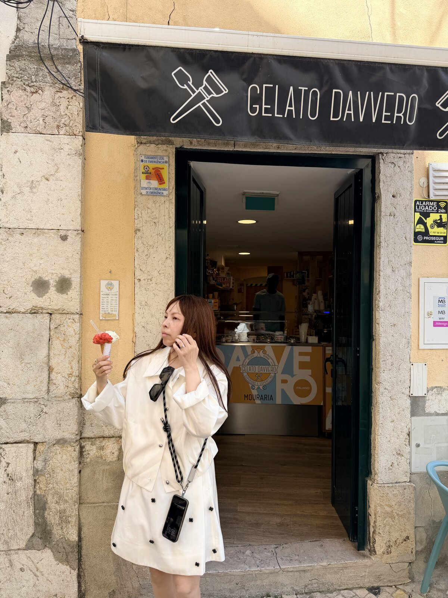
GELATO DAVVERO · MOURARIA · 16:00阿米在店門口拿著草莓+香草雙球 gelato。黑色招牌「GELATO DAVVERO」+ 黃色內牆 + 店員在櫃台後面看著外面。
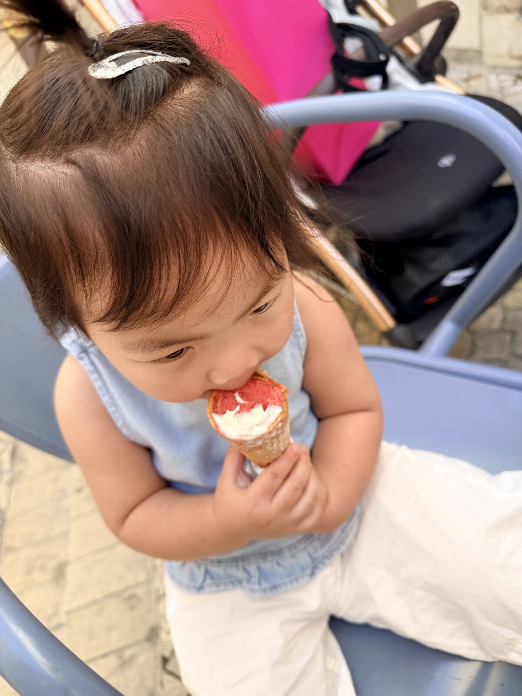
MIMI · O PRIMEIRO GELATO · HERO米米啃她人生第一支歐洲 gelato。銀色蝴蝶結髮夾、牛仔背心、沖天炮頭、迷你 cone 上的粉紅+白色雙球。先皺眉,再展開笑容。
藍花楹斜坡 · 九重葛遮陽傘 · 一張全家福
Alfama 是里斯本最老的區,大地震時奇蹟般沒倒,所以那些扭曲的窄巷、剝落的牆面、突然出現的階梯,都還是中世紀的脾氣。我們推著 GB 嬰兒車一路上坡,有些段太陡只能用扛的。沿路抬頭都是好看的東西:藍花楹排成的斜坡、牆上「25 ABRIL」革命塗鴉、藍白 azulejo 磁磚。
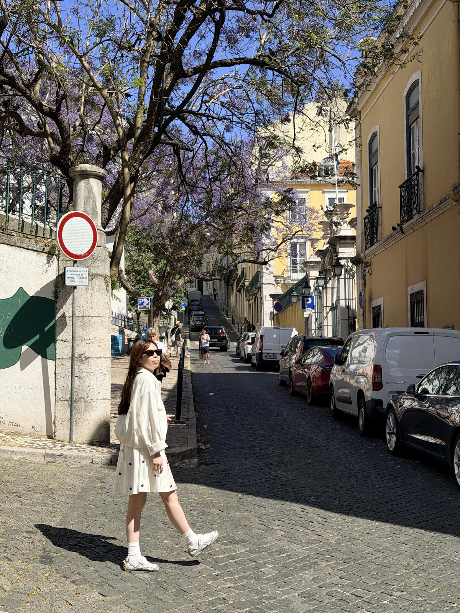
JACARANDÁ · LADEIRA · 25 ABRIL阿米回頭看 —— 整條斜坡是藍花楹掛下來的紫色簾子。左邊石柱上的禁止標誌、地上的「25 ABRIL」革命塗鴉、一路停滿的車。Day 10 真正的藍花楹高光。
到了 Miradouro de Santa Luzia 觀景台,一切都對了。一棵巨大的九重葛(對,是九重葛不是藍花楹 —— 顏色都是紫紅但科別不同)張開像一把粉紫色遮陽傘,下面是藍白磁磚牆,牆外是 Tejo 河、貨櫃輪、Alfama 的橘色屋頂。
我們三個人,白衣服,坐在磁磚牆上。米米在中間。這張全家福變成了 Day 10 的封面。
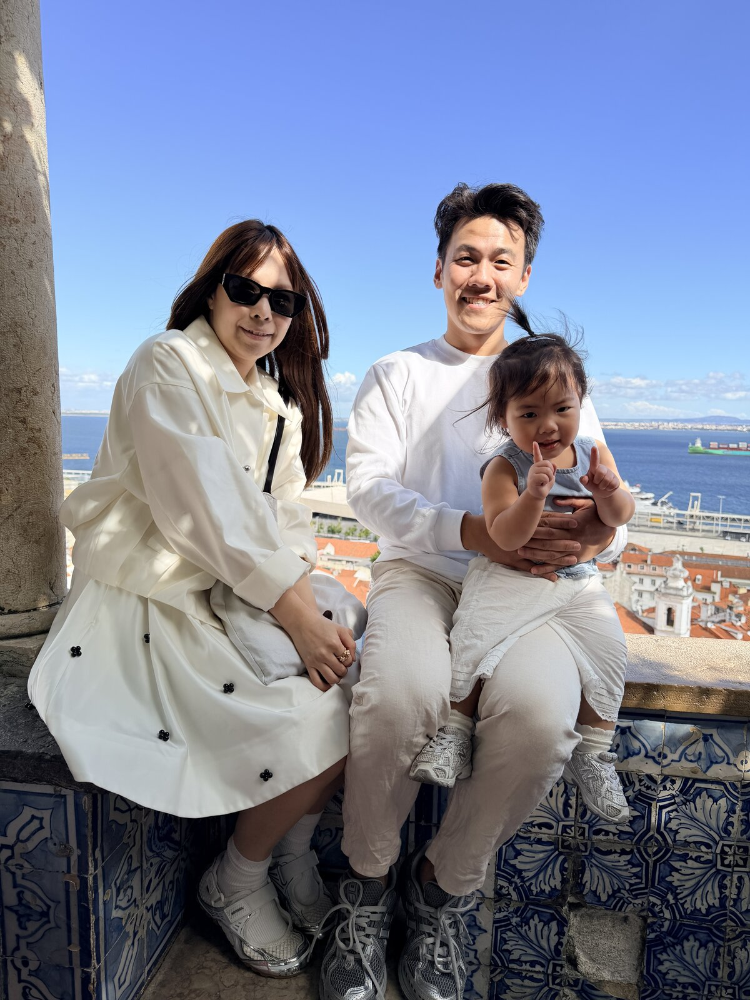
SANTA LUZIA · A FAMÍLIA · COVER HERO阿米(白洋裝太陽眼鏡)+ 我(白上衣)+ 米米(藍背心比讚)坐在藍白 azulejo 磁磚牆上,背後是 Tejo 河與貨櫃輪 + Alfama 屋頂。米米的沖天炮頭髮被風吹起來。生日這天最對的一張。
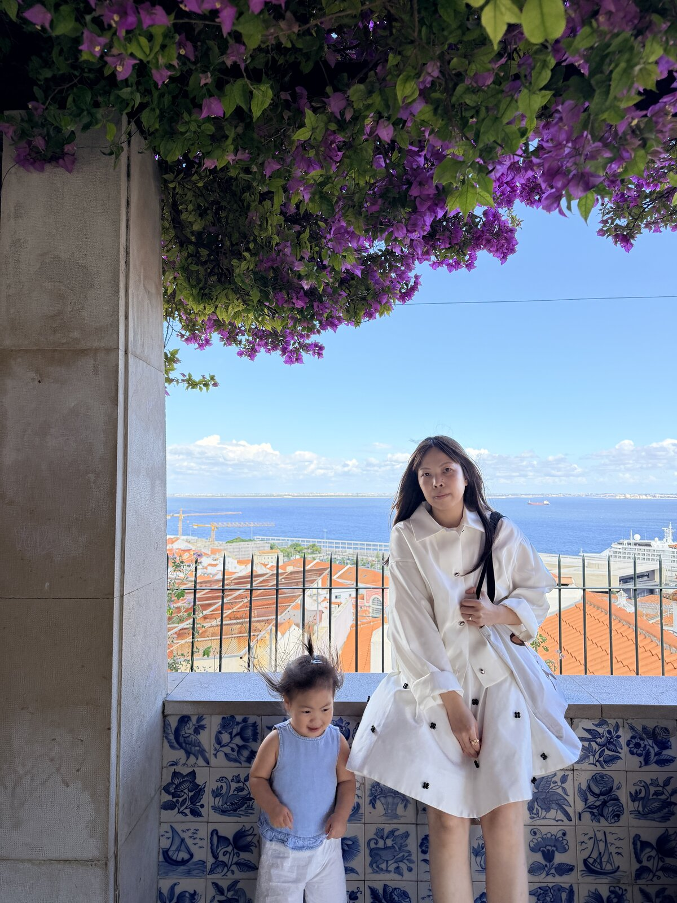
AZULEJO · MÃE & FILHA阿米 + 米米在藍白磁磚牆前 —— 磁磚上畫滿動物、船、鳥、花朵。九重葛從上方垂下來。米米的沖天炮這次飛得更高。
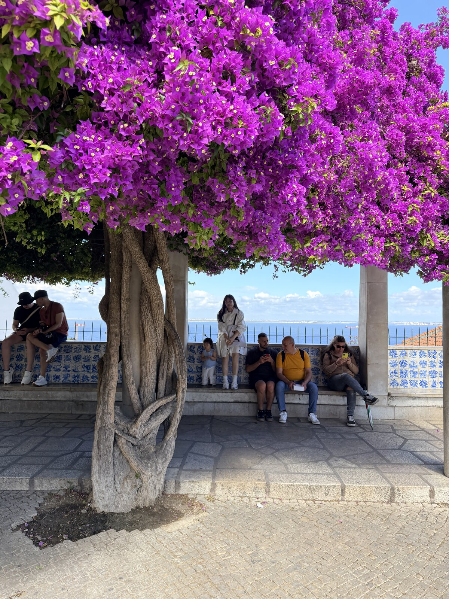
退一點拍全景 —— 巨大九重葛形成天篷,阿米站在中央,米米站在矮牆邊角(穿藍背心),其他遊客坐長椅滑手機。
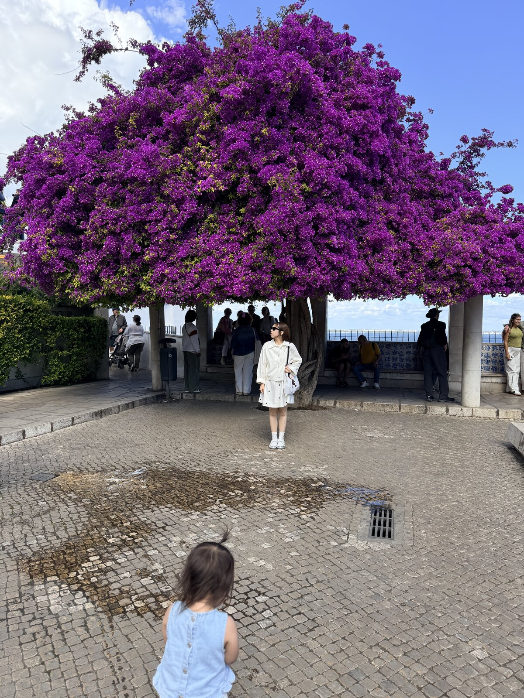
BOUGAINVILLEA · O CHAPÉU GIGANTE巨大九重葛全景。樹幹扭曲得像一個老人在伸懶腰,花是粉紫色的雲。阿米站在中央,前景米米的沖天炮頭髮飄起來。
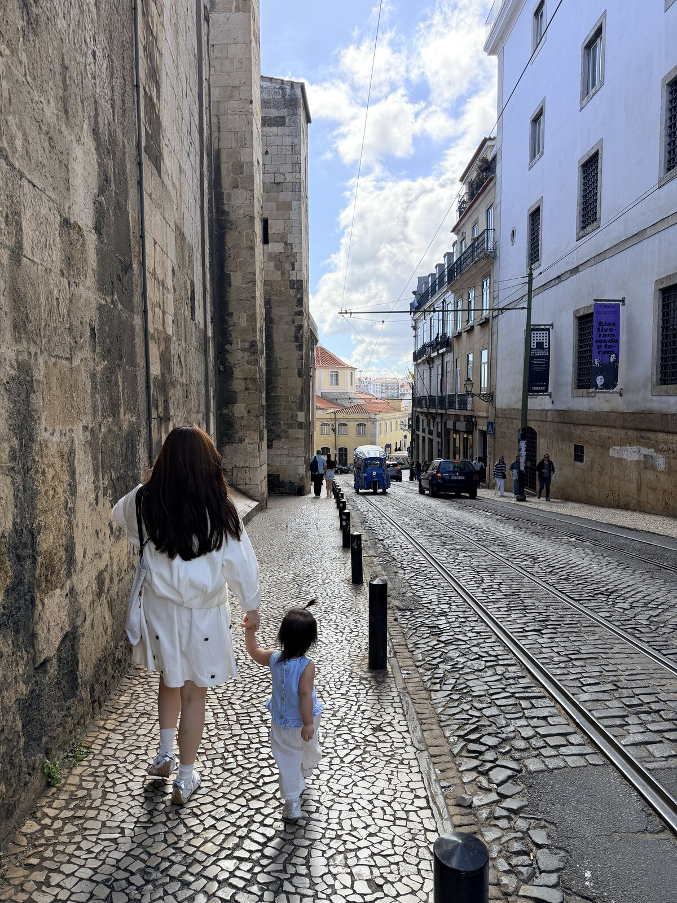
MÃE & FILHA · CALÇADA阿米牽米米走 cobblestone,Tram 28 的軌道在右邊,左邊石牆遠遠看到右後方一個紫色橫幅 —— 「Elas liveram-...」(她們敢...)。三代女人,一個下午。
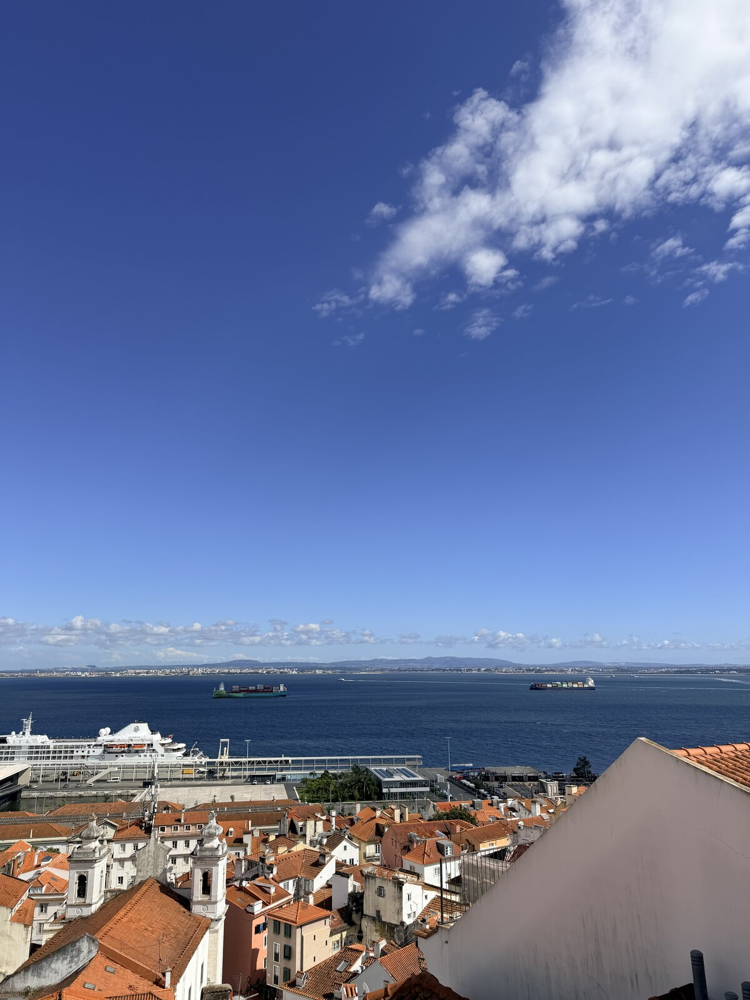
同一個觀景台,沒有人入鏡 —— 整片 Tejo 河、左邊郵輪、海平面上兩艘貨櫃輪、近處 Alfama 的橘色屋頂。下午三點半的光線是這座城市的特權。
荷蘭風 Amsterdam fries · 米米在 OSB 木屑地板上奔跑
17:32,從 Alfama 下山,我們轉進 Potato Project —— 荷蘭風的薯條專賣店,主店在 Sintra 的 Beloura Office Park,里斯本是分店。深綠色的牆、白色磁磚櫃台、扇貝形的金屬裝飾。Reg Steakhouse Fries 6.00€,培根 + 奶油醬汁。米米脫了鞋,在 OSB 板的木屑地板上小跑步,自由是自由,但每個經過她的人都會微笑。
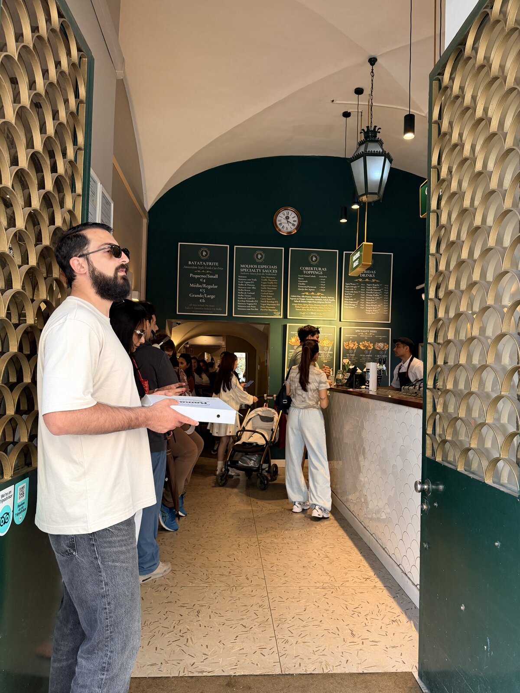
DEEP GREEN · ARCHED CEILING店內深綠色牆 + 拱形天花板 + 鎏金色金屬扇貝裝飾 + 黃銅吊燈。阿米推著米米的 GB 嬰兒車在排隊。
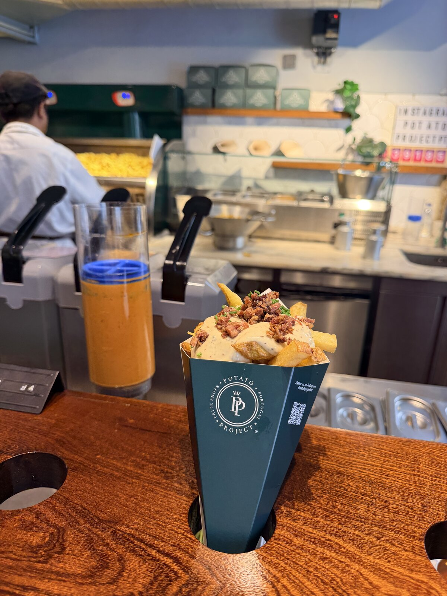
深綠色的薯條 cone,印著「Potato Project · Frite Shops · Portugal」。培根碎 + 奶油 mostarda 醬汁 + 蔥花。後面是橘色 piri-piri 醬汁罐。
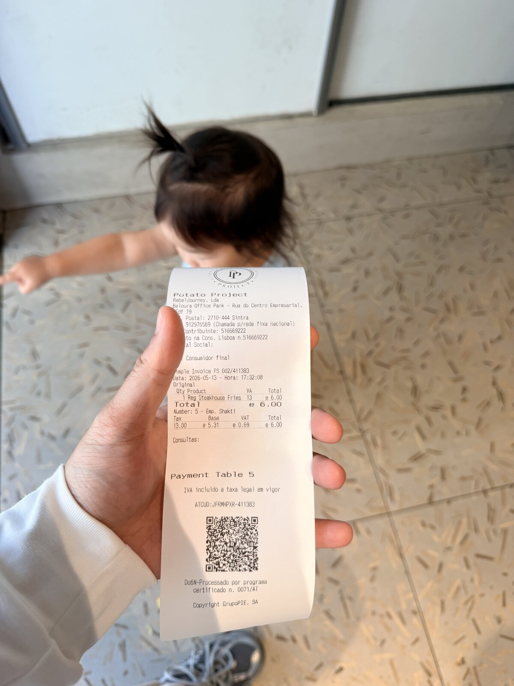
€6.00 · 17:32:08 · ATCUD JFRMHPXR-411383收據被我拿在手上,米米剛剛跑過去,背後是 OSB 木屑地板。Emp. Shakti 收的款。米米已經脫鞋了。
第二支 gelato · 一個友善的失誤
下午回家的路上,經過 Cais do Sodré 附近,28 號電車從旁邊滑過 —— #580 號,MB Way 粉色塗裝,往 Prazeres 方向。Tram 28 是里斯本的明信片畫面,但今天我們不搭,只是看著它過。
第二支 gelato 在 MÚ Gelato Italiano —— 自稱「Laboratorio Tradizionale」的義式手工冰。黃色的牆,白色的瓷磚櫃台。櫃台後面是 Gabriel —— 戴米色棒球帽、黑圍裙、米色 T 恤、戴眼鏡,看起來像巴西人,笑起來很有感染力。
阿米點了芒果 sorbet + 巧克力碎(類似 Banana e Cioccolata 那一格),搭 cialda 圓筒餅。Gabriel 在裝的時候手滑了一下,給錯了一個口味。他抬頭,有點不好意思,然後說:「沒關係,我再給你們做一份。」—— 多了一杯,沒收費。
—— Plot Twist:店員送了一份。我跟 Gabriel 自拍合照,雙比讚。一個失誤,變成一個故事。友善是會長腳的東西。
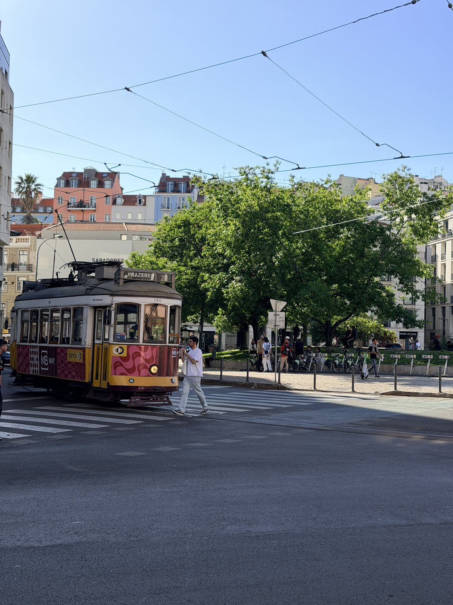
TRAM 28 · #580 · PRAZERES粉色 MB Way 塗裝的 28 號電車,終點寫著「PRAZERES」(意思是「快樂」 —— 一個墓園的名字,卻被叫做快樂)。明信片瞬間。
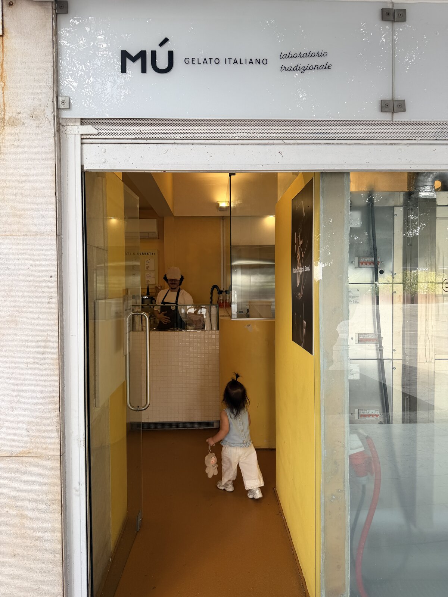
MÚ GELATO · ENTRADA米米拿著小熊娃娃自己走進店裡 —— 黃色內裝 + Gabriel 在櫃台後面看著她。「MÚ Gelato Italiano · Laboratorio Tradizionale」白底黑字。
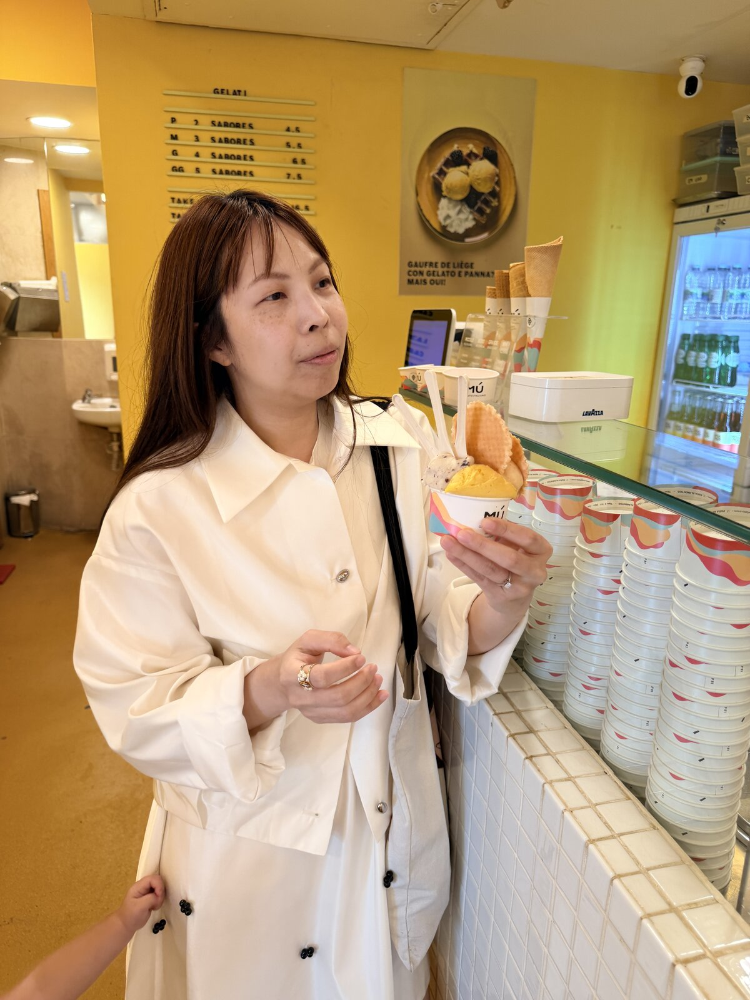
AMI · MANGA + CIOCCOLATO阿米拿著 MÚ 的紙杯,芒果 sorbet + 巧克力碎 + cialda 圓筒餅。背後是「Gaufre de Liège con gelato e panna? Mais oui!」廣告。
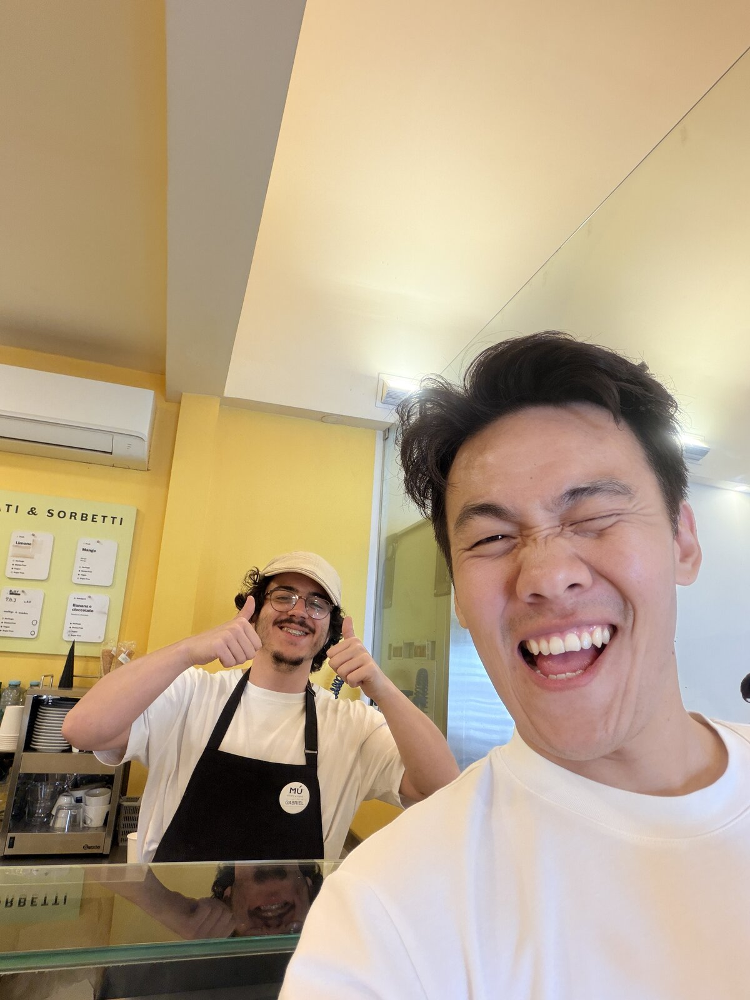
PLOT TWIST · O GABRIEL自拍合照 —— Gabriel 雙比讚(工作牌寫著「MÚ Gabriel」),我笑到瞇眼。失誤被款待感蓋過,故事就誕生了。「友善是會長腳的東西。」
永遠裝不滿 · 但永遠夠用
晚上的最後一站是 Louis Vuitton Lisboa 旗艦店。早上的 Flabelus 是友情的鞋,晚上的 LV 是永恆的包。阿米為他娘親代購一隻 Neverfull —— 2007 年問世的經典,字面意思「永遠裝不滿」。每個媽媽都愛的代表作。
米米在 LV 店裡走來走去,店員不但沒有阻止,還拿了一個玻璃杯,倒了水給她喝。她站在 monogram 老皮箱展示櫃前面,小小一隻,被 Vivienne 鉤針娃娃環繞 —— 那一刻她看起來像一個 LV 的小小代言人。奢侈品店的善意,通常藏在水杯裡。
LV LISBOA · MONOGRAM TRUNK NICHE米米站在展示櫃前 —— 中央上層是 monogram 帽盒,中層是 LV 圓鏡 + 圓形 chain 包 + 馬鞍包,底層是打開的老皮箱。左側牆上掛著黑白狐毛短外套。米米沖天炮頭髮飛起來。
LV LISBOA · ÁGUA NO COPO米米站在 herringbone 木地板上,雙手捧著玻璃杯喝水。上方是 Vivienne 鉤針娃娃(粉色 + 藍色)+ 藍色 monogram 圍巾 + 粉色 monogram 圍巾掛在金色 T 字架上。店員的小小善意被記錄下來。
繞回 Eduardo VII 圓環 · 圓滿一日
晚上 22:35,我們繞回 Marquês de Pombal 的 McDonald's。早上從這個圓環附近出發,晚上回到這裡 —— 整天剛好畫了一個圓。
米米的 Happy Meal、阿米的 McCrispy 套餐、我點了一個只有葡萄牙才有的 McPrego com Ovo(葡萄牙風煎蛋牛排堡)、雞塊、Sundae 鳳梨、Mini Flurry Snickers、雞翅買二送一。€22.95。生日這天的麥當勞,味道甚至比米其林還深刻一點 —— 因為太累了,腳沒力了,坐下來那一刻什麼都變好吃。
回 Altis Prime 之後洗了一缸衣服。明天要飛巴黎,商務艙。—— 因為阿米生日。
MQ POMBAL · 22:40 · A CHEGADA晚上 22:40,走到 McDonald's 對街拍的最後一張街景 —— 雙金拱在夜光下發著電影感的黃。一台車經過,馬路上有水反光。整天的疲憊都壓縮在這一張裡。
ORDER #4244 · €22.95 · 22:35:43完整菜單清單:McCrispy Ori、Bat Mn、McNuggets 4、McPrego com Ovo、Mini Flurry Snickers、Sundae Ananás、Chk Wings 3 (買二送一)。Tax 13% / 23%。Visa 7895 1734 結帳。生日這天的最後一個 transaction。
從飯店出發 · 繞了里斯本一圈 · 走回飯店
從 Altis Prime 出發,順時針繞了里斯本一圈,最後回到 Marquês de Pombal —— 整天剛好畫了一個圓。步行距離約 5-6 公里,但因為 Alfama 全是上坡,實際感覺像走了 10 公里。
今天從 Flabelus 三個女生的友情開始,在 Tapisco 的十三隻火腿牆下吃了一頓會被記住的午餐,在 Beatriz 默默插上的那一根蠟燭裡看見了餐廳的善意,在 D. Pedro IV 的藍花楹下面兌現了昨天的伏筆,在 Santa Luzia 的九重葛底下拍下了一張會變成封面的全家福,在 LV 的水杯裡接住了一份對小孩子的耐心,在 Gabriel 多送的一杯 gelato 裡收下了陌生人的好意。
三百多年前,葡萄牙人在 2 月 13 日簽下讓自己自由的條約。今天,5 月 13 日,我們慶祝阿米又長了一歲。同一個數字,不同的維度,但都是某種程度的自由。
明天我們飛巴黎。3年後看看有沒有不一樣。